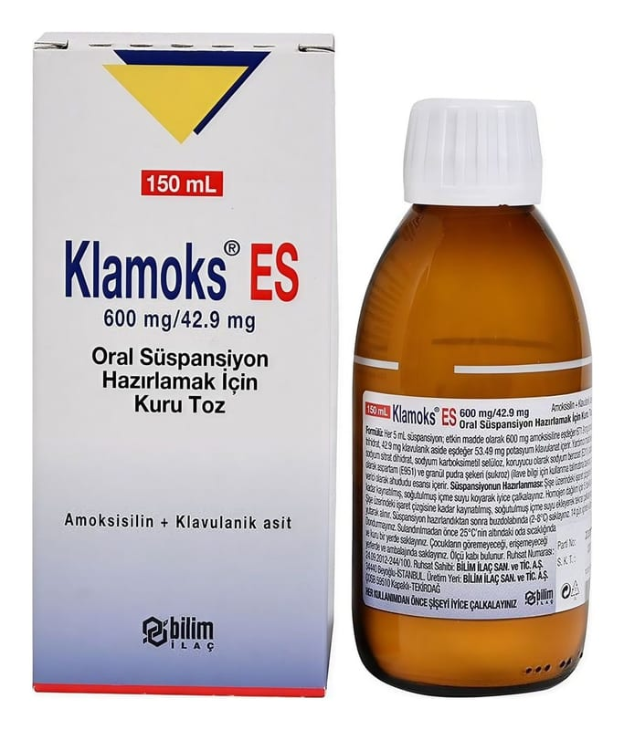

Klamoks ES 600 mg/42,9 mg Oral Süspansiyon Hazırlamak İçin Kuru Toz 150 ml

Ne için kullanılır
KT · Bölüm 1KLAMOKS ES enfeksiyonların tedavisinde kullanılan bir antibiyotiktir ve enfeksiyona neden olan bakterileri öldürerek işlev görür. Amoksisilin (amoksisilin trihidrat (buzağı kaynaklı) olarak) adı verilen bir penisilin ve amoksisilinin etkisiz hale gelmesini engelleyerek işlev gören klavulanik asit (potasyum klavulanat olarak) olmak üzere iki etkin bileşen içerir.
KES600/42,9-240229P15 Sayfa 2
KLAMOKS ES, sulandırıldığında 100 mL ve 150 mL süspansiyon elde edilen, krem-beyaz renkli, ahududu kokulu homojen kuru toz halinde üzerinde sulandırma çizgisi bulunan amber renkli cam şişelerde bulunmaktadır. Beraberinde 5 mL’lik ölçü kaşığı bulunur.
KLAMOKS ES bakterilerin neden olduğu, çocuklarda görülen aşağıdaki enfeksiyonların tedavisinde kullanılır.
• Üst solunum yolu enfeksiyonları (tekrarlayan veya kronik orta kulak iltihabı gibi KBB enfeksiyonları dahil olmak üzere) • Bademcik ve solunum yolu enfeksiyonu (tonsillo-farenjit) ve sinüs iltihabı (sinüzit) • Alt solunum yolu enfeksiyonları (akciğer iltihabı gibi) • Deri ve yumuşak doku enfeksiyonları